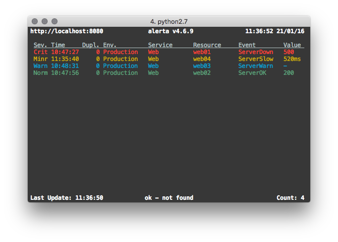

Alerta CLI
alerta is the unified command-line tool, terminal GUI and Python SDK
for the alerta monitoring system.
It can be used to send and query alerts, tag alerts and change alert status, delete alerts, dump alert history or see the raw alert data. It can also be used to send heartbeats to the alerta server, and generate alerts based on missing or slow heartbeats.

Installation
The alerta client tool can be installed using pip:
$ pip install alerta
Or, by cloning the git repository:
$ git clone https://github.com/alerta/python-alerta-client.git
$ cd python-alerta-client
$ pip install .
Configuration
Options can be set in a configuration file, as environment variables or on the command line. Profiles can be used to easily switch between different configuration settings.
Option |
Config File |
Environment Variable |
Optional Argument |
Default |
|---|---|---|---|---|
file |
n/a |
|
|
|
profile |
profile |
|
|
None |
endpoint |
endpoint |
|
|
|
key |
key |
|
n/a |
None |
timezone |
timezone |
n/a |
n/a |
Europe/London |
timeout |
timeout |
n/a |
n/a |
5s TCP connection timeout |
ssl verify |
sslverify |
|
n/a |
verify SSL certificates |
output |
output |
n/a |
|
text |
color |
color |
|
|
color on |
debug |
debug |
|
|
no debug |
Note
The profile option can only be set in the [DEFAULT] section.
Example
Configuration file ~/.alerta.conf:
[DEFAULT]
timezone = Australia/Sydney
output = json
[profile development]
endpoint = https://localhost:8443
key = demo-key
sslverify = off
timeout = 10.0
debug = yes
Set environment variables:
$ export ALERTA_CONF_FILE=~/.alerta.conf
$ export ALERTA_DEFAULT_PROFILE=production
Use production configuration settings by default:
$ alerta query
Switch to development configuration settings when required:
$ alerta --profile development query
Precedence
Command-line configuration options have precedence over environment
variables, which have precedence over the configuration file. Within
the configuration file, profile-specific sections have precedence over
the [DEFAULT] section.
Authentication
If the Alerta API enforces authentication, then the alerta command-line
tool can be configured to present an API key or login to the API before
accessing secured endpoints.
API Keys
API keys can be generated in the web UI, or by an authenticated user using
the alerta CLI, and should be added to the configuration file as the “key”
setting as shown in the following example:
[profile production]
endpoint = https://api.alerta.io
key = LMvzLsfJyGpSuLmaB9kp-8gCl4I3YZkV4i7IGb6S
OAuth Login
Alternatively, a user can “login” to the API and retrieve a Bearer token if
the Alerta API is configured to use either basic, github, gitlab
or google as the authentication provider. No additional settings are
required but before running any commands the user must login first:
$ alerta login
Commands
The alerta tool is invoked by specifying a command using the
following format:
$ alerta [OPTIONS] COMMAND [ARGS]...
Alert Commands
The following group of commands are related to sending, querying and managing the status of alerts.
Common Alert Selection Options
Many alert commands accept the same options for selecting which alerts to act on. These common options are:
-i, --ids ID List of alert IDs (can be specified multiple times)
-q, --query QUERY query eg. severity:major AND resource:web01
-f, --filter FILTER KEY=VALUE eg. serverity=major (can be specified multiple
times)
Alerts can be selected by one or more alert IDs using --ids, by a query
string using --query, or by key-value filters using --filter. These
options are shared by query, ack, close, unack, shelve,
unshelve, tag, untag, update, delete, action,
note, watch and raw.
send - Send an alert
Send an alert.
$ alerta send [OPTIONS]
Options:
-r, --resource RESOURCE Resource under alarm
-e, --event EVENT Event name
-E, --environment ENVIRONMENT Environment eg. Production, Development
-s, --severity SEVERITY Severity eg. critical, major, minor, warning
-C, --correlate EVENT List of related events eg. node_up, node_down
-S, --service SERVICE List of affected services eg. app name, Web,
Network, Storage, Database, Security
-g, --group GROUP Group event by type eg. OS, Performance
-v, --value VALUE Event value
-t, --text DESCRIPTION Description of alert
-T, --tag TAG List of tags eg. London, os:linux, AWS/EC2
-A, --attributes KEY=VALUE List of attributes eg. priority=high
-O, --origin ORIGIN Origin of alert in form app/host
--type EVENT_TYPE Event type eg. exceptionAlert,
performanceAlert, nagiosAlert
--timeout SECONDS Seconds before an open alert will be expired
--raw-data STRING Raw data of orignal alert eg. SNMP trap PDU.
'@' to read from file, '-' to read from stdin
--customer STRING Customer
-h, --help Show this message and exit.
The only mandatory options are resource and event. All the others will
be set to sensible defaults.
Attention
If the reject plugin is enabled (which it is by
default) then alerts must have an environment attribute that
is one of either Production or Development and it must
define a service attribute. For more information on configuring
or disabling this plugin see Plugin Settings.
Attribute |
Default |
|---|---|
environment |
empty string |
severity |
|
correlate |
empty list |
status |
|
service |
empty list |
group |
|
value |
|
text |
empty string |
tags |
empty list |
attributes |
empty dictionary |
origin |
program/host |
type |
|
timeout |
86400 (1 day) |
raw data |
empty string |
Examples
To send a minor alert followed by a normal alert that correlates:
$ alerta send --resource web01 --event HttpError --correlate HttpOK --group Web --severity minor
$ alerta send --resource web01 --event HttpOK --correlate HttpError --group Web --severity normal
To send an alert with custom attribute called region:
$ alerta send -r web01 -e HttpError -g Web -s major --attributes region="EU"
query - Search for alerts
Query for alerts based on search filter criteria.
$ alerta query [OPTIONS]
Options:
-i, --ids ID List of alert IDs (can be specified multiple times)
-q, --query QUERY query eg. severity:major AND resource:web01
-f, --filter FILTER KEY=VALUE eg. severity=major (can be specified multiple
times)
--oneline Format output as a single line per alert (default)
--medium Format output as medium detail
--full Format output as full detail
-h, --help Show this message and exit.
Examples
To query for major and minor open alerts for the Production environment of the Mobile API service:
$ alerta query --filter severity=major --filter severity=minor --filter status=open --filter environment=Production --filter service="Mobile API"
To query for all alerts with “disk” in the alert text:
$ alerta query --filter text=~disk
To query for a specific alert by ID with full detail:
$ alerta query --ids 5eb851eb --full
ack - Acknowledge alerts
Acknowledge alerts ie. change alert status to ack.
$ alerta ack [OPTIONS]
Options:
-i, --ids ID List of alert IDs
-q, --query QUERY query eg. severity:major AND resource:web01
-f, --filter FILTER KEY=VALUE eg. severity=major
--text TEXT Reason for acknowledgement
-h, --help Show this message and exit.
close - Close alerts
Close alerts ie. change alert status to closed.
$ alerta close [OPTIONS]
Options:
-i, --ids ID List of alert IDs
-q, --query QUERY query eg. severity:major AND resource:web01
-f, --filter FILTER KEY=VALUE eg. severity=major
--text TEXT Reason for closing
-h, --help Show this message and exit.
unack - Un-acknowledge alerts
Unacknowledge alerts ie. change alert status to open.
$ alerta unack [OPTIONS]
Options:
-i, --ids ID List of alert IDs
-q, --query QUERY query eg. severity:major AND resource:web01
-f, --filter FILTER KEY=VALUE eg. severity=major
--text TEXT Reason for un-acknowledgement
-h, --help Show this message and exit.
shelve - Shelve alerts
Shelve alerts ie. change alert status to shelved which removes the
alerts from the active console and prevents any further notifications.
$ alerta shelve [OPTIONS]
Options:
-i, --ids ID List of alert IDs
-q, --query QUERY query eg. severity:major AND resource:web01
-f, --filter FILTER KEY=VALUE eg. severity=major
--timeout SECONDS Seconds before shelve expires (default: 7200)
--text TEXT Reason for shelving
-h, --help Show this message and exit.
unshelve - Un-shelve alerts
Unshelve alerts ie. change alert status to open which returns the
alerts to the active console and does not prevent future notifications.
$ alerta unshelve [OPTIONS]
Options:
-i, --ids ID List of alert IDs
-q, --query QUERY query eg. severity:major AND resource:web01
-f, --filter FILTER KEY=VALUE eg. severity=major
--text TEXT Reason for unshelving
-h, --help Show this message and exit.
tag - Tag alerts
Add tags to alerts.
$ alerta tag [OPTIONS]
Options:
-i, --ids ID List of alert IDs
-q, --query QUERY query eg. severity:major AND resource:web01
-f, --filter FILTER KEY=VALUE eg. severity=major
-T, --tag TAG Tag to add (required, can be specified multiple times)
-h, --help Show this message and exit.
Example
$ alerta tag --ids 5eb851eb --tag London --tag os:linux
untag - Untag alerts
Remove tags from alerts.
$ alerta untag [OPTIONS]
Options:
-i, --ids ID List of alert IDs
-q, --query QUERY query eg. severity:major AND resource:web01
-f, --filter FILTER KEY=VALUE eg. severity=major
-T, --tag TAG Tag to remove (required, can be specified multiple times)
-h, --help Show this message and exit.
update - Update alert attributes
Update alert attributes.
$ alerta update [OPTIONS]
Options:
-i, --ids ID List of alert IDs
-q, --query QUERY query eg. severity:major AND resource:web01
-f, --filter FILTER KEY=VALUE eg. severity=major
-A, --attributes KEY=VALUE Attribute to update (required, can be specified
multiple times)
-h, --help Show this message and exit.
Example
$ alerta update --ids 5eb851eb --attributes priority=high --attributes owner=jsmith
delete - Delete alerts
Delete alerts. If no --ids, --query or --filter is specified,
the command will prompt for confirmation before deleting all alerts.
$ alerta delete [OPTIONS]
Options:
-i, --ids ID List of alert IDs
-q, --query QUERY query eg. severity:major AND resource:web01
-f, --filter FILTER KEY=VALUE eg. severity=major
-h, --help Show this message and exit.
action - Take action on alerts
Take a custom action on alerts.
$ alerta action [OPTIONS]
Options:
-a, --action ACTION Action to perform on alerts
-i, --ids ID List of alert IDs
-q, --query QUERY query eg. severity:major AND resource:web01
-f, --filter FILTER KEY=VALUE eg. severity=major
--text TEXT Reason for action
-h, --help Show this message and exit.
Example
$ alerta action --action escalate --ids 5eb851eb --text "Escalating to L2 support"
note - Add or delete alert notes
Add or delete notes on alerts.
$ alerta note [OPTIONS]
Options:
-i, --alert-ids ID List of alert IDs
-q, --query QUERY query eg. severity:major AND resource:web01
-f, --filter FILTER KEY=VALUE eg. severity=major
--text TEXT Note text to add
-D, --delete ALERT_ID NOTE_ID
Delete a note by alert ID and note ID
-h, --help Show this message and exit.
Example
$ alerta note --alert-ids 5eb851eb --text "Investigating root cause"
notes - List alert notes
List notes for an alert.
$ alerta notes [OPTIONS]
Options:
-i, --alert-id ID Alert ID to list notes for
-h, --help Show this message and exit.
watch - Watch alerts
Watch for new alerts, continuously updating the display.
$ alerta watch [OPTIONS]
Options:
-i, --ids ID List of alert IDs
-q, --query QUERY query eg. severity:major AND resource:web01
-f, --filter FILTER KEY=VALUE eg. severity=major
--details Show alert details
-n, --interval SECONDS Refresh interval in seconds (default: 2)
-h, --help Show this message and exit.
top - Show top offenders and stats
Display alerts like the unix top command. Shows a continuously updating
summary of the top alert offenders by resource, event and other criteria.
raw - Show alert raw data
Show raw data for alerts.
$ alerta raw [OPTIONS]
Options:
-i, --ids ID List of alert IDs
-q, --query QUERY query eg. severity:major AND resource:web01
-f, --filter FILTER KEY=VALUE eg. severity=major
-h, --help Show this message and exit.
history - Show alert history
Show action, status, severity and value changes for alerts.
alerts - List alert metadata
List environments, services, groups and tags for alerts.
$ alerta alerts [OPTIONS]
Options:
-E, --environments List alert environments
-S, --services List alert services
-g, --groups List alert groups
-T, --tags List alert tags
-h, --help Show this message and exit.
Blackout Commands
The following group of commands are related to creating and managing alert suppressions using blackouts.
blackout - Suppress alerts
Create or delete a blackout period to suppress alerts.
$ alerta blackout [OPTIONS]
Options:
-E, --environment ENVIRONMENT Environment eg. Production, Development
-S, --service SERVICE List of affected services
-r, --resource RESOURCE Resource under alarm
-e, --event EVENT Event name
-g, --group GROUP Group event by type
-T, --tag TAG List of tags (can be specified multiple times)
-O, --origin ORIGIN Origin of alert
--customer STRING Customer
--start DATETIME Start time of blackout
--duration SECONDS Duration of blackout in seconds
--text TEXT Reason for blackout
-D, --delete ID Delete blackout using ID
-h, --help Show this message and exit.
blackouts - List alert suppressions
List blackout periods.
$ alerta blackouts [OPTIONS]
Options:
--purge Delete expired blackouts
-h, --help Show this message and exit.
Heartbeat Commands
The following group of commands are related to creating and managing heartbeats.
heartbeat - Send a heartbeat
Send or delete a heartbeat.
$ alerta heartbeat [OPTIONS]
Options:
-O, --origin ORIGIN Origin of heartbeat.
-E, --environment ENVIRONMENT Environment eg. Production, Development
-s, --severity SEVERITY Severity eg. critical, major, minor, warning
-S, --service SERVICE List of affected services eg. app name, Web,
Network, Storage, Database, Security
-g, --group GROUP Group event by type eg. OS, Performance
-T, --tag TAG List of tags eg. London, os:linux, AWS/EC2
--timeout SECONDS Seconds before heartbeat is stale
--customer STRING Customer
-D, --delete ID Delete hearbeat using ID
-h, --help Show this message and exit.
Note
The “environment”, “severity”, “service” and “group” values are only used when heartbeat alerts are generated from slow or stale heartbeats.
heartbeats - List heartbeats
List heartbeats and generate heartbeat alerts.
$ alerta heartbeats [OPTIONS]
Options:
--alert Alert on stale or slow heartbeats
-s, --severity SEVERITY Severity for stale heartbeat alerts
--timeout SECONDS Seconds before a stale heartbeat alert will be expired
--purge Delete all stale heartbeats
-h, --help Show this message and exit.
Alerts can be generated from stale or slow heartbeats using
the --alert option. It is expected that this would be run
at regular intervals using a scheduling service such as cron.
Tags can be used to set the environment or group of a heartbeat
alert using the format environment:[ENV] and group:[GRP]. These
tags will be visible in the heartbeat but removed as tags from the alert.
Example
To send a major alert with an environment of Infra in the Network
group when a heartbeat is missed or slow for an origin called system1:
$ alerta heartbeat -O system1 -T environment:Infra -T group:Network --timeout 10
(wait >10 seconds)
$ alerta heartbeats --alert --severity major
API Key Commands
The following group of commands are related to creating and managing API keys.
key - Create API key
Create or delete an API key.
$ alerta key [OPTIONS]
Options:
-K, --api-key KEY API key string
-u, --username USER Username associated with the key
--scope SCOPE Permission scope (can be specified multiple times)
--duration SECONDS Duration of key validity in seconds
--text TEXT Description of key
--customer STRING Customer
-D, --delete ID Delete API key using ID
-h, --help Show this message and exit.
Important
To prevent privilege escalation it is not possible to create an API key with associated roles that are greater than that with which that API key has.
keys - List API keys
List API keys.
revoke - Revoke API key
Revoke an API key.
User Commands
The following group of commands are related to creating and managing users.
user - Update user
Create, update or delete a user.
$ alerta user [OPTIONS]
Options:
-i, --id ID User ID
--name NAME User name
--email EMAIL User email
--password PASSWORD User password
--status STATUS User status
--role ROLE User role (can be specified multiple times)
--text TEXT Description
--email-verified Mark email as verified
--email-not-verified Mark email as not verified
--groups List user groups
-D, --delete ID Delete user using ID
-h, --help Show this message and exit.
users - List users
List users.
me - Update current user
Update the currently logged in user.
group - Manage groups
Create or delete groups, and add or remove users from groups.
$ alerta group [OPTIONS]
Options:
-i, --id ID Group ID
--name NAME Group name
--text TEXT Description
-U, --user USER Add or remove a user from the group
--users List users in the group
-D, --delete ID Delete group using ID
-h, --help Show this message and exit.
groups - List groups
List user groups.
Permissions Commands
The following group of commands are related to creating and managing roles, permissions and access control.
perm - Add role-permission lookup
Create or delete a role-permission lookup.
$ alerta perm [OPTIONS]
Options:
--role ROLE Role name
--scope SCOPE Permission scope (can be specified multiple times)
-D, --delete ID Delete permission using ID
-h, --help Show this message and exit.
perms - List role-permission lookups
List role-permission lookups.
scopes - List permission scopes
List available permission scopes.
Customer Commands
The following group of commands are related to creating and managing customers.
customer - Add customer lookup
Create or delete a customer lookup. The match can be against an organization, group, domain or role.
$ alerta customer [OPTIONS]
Options:
--customer CUSTOMER Customer name
--org MATCH Match against organization
--group MATCH Match against group
--domain MATCH Match against domain
--role MATCH Match against role
-D, --delete ID Delete customer using ID
-h, --help Show this message and exit.
customers - List customer lookups
List customer lookups.
Auth Commands
The following group of commands are related to authentication.
signup - Sign-up new user
signup Sign-up new user
login - Login with user credentials
login Login with user credentials
logout - Clear login credentials
logout Clear login credentials
whoami - Display current logged in user
whoami Display current logged in user
token - Display current auth token
token Display current auth token
Admin Commands
The following group of commands are related to administration.
status - Display status and metrics
Display API server switch status and usage metrics.
$ alerta status
METRIC TYPE NAME VALUE AVERAGE
--------------------------- ------- ------------------------- ------- -----------
Total alerts gauge alerts.total 993
Rejected alerts counter alerts.rejected 22
Alert queries timer alerts.queries 9132459 128.713
Pre-receive plugins timer plugins.prereceive 10889 0.0383874
Newly created alerts timer alerts.create 4442 5.06123
Post-receive plugins timer plugins.postreceive 10867 0.0149995
Received alerts timer alerts.received 15376 23.4729
Duplicate alerts timer alerts.duplicate 9167 8.26061
Correlated alerts timer alerts.correlate 429 20.9068
Tagging alerts timer alerts.tagged 246 35.5935
Alert status change timer alerts.status 687 88.2969
Deleted alerts timer alerts.deleted 8 120.25
Removing tags from alerts timer alerts.untagged 52 22.2308
Count alerts timer alerts.counts 4388289 23.9553
Alerta console auto-refresh text switch.auto-refresh-allow ON
API alert submission text switch.sender-api-allow ON
config - Display remote client config
Display client config downloaded from API server.
$ alerta config
audio : {}
auth_required : True
client_id : 736147134702-glkb1pesv716j1utg4llg7c3rr7nnhli.apps.googleusercontent.com
colors : {}
customer_views : True
dates : {'longDate': 'EEEE, MMMM d, yyyy h:mm:ss.sss a (Z)', 'mediumDate': 'medium', 'shortTime': 'shortTime'}
endpoint : https://api.alerta.dev
github_url : None
gitlab_url : https://gitlab.com
keycloak_realm : None
keycloak_url : None
cas_server : None
provider : google
refresh_interval : 5000
severity : {'cleared': 5, 'critical': 1, 'debug': 7, 'indeterminate': 5, 'informational': 6, 'major': 2, 'minor': 3, 'normal': 5, 'ok': 5, 'security': 0, 'trace': 8, 'unknown': 9, 'warning': 4}
signup_enabled : True
tracking_id : UA-44644195-5
housekeeping - Expired and clears old alerts
Trigger the expiration and deletion of alerts.
uptime - Display server uptime
Show how long the Alerta API has been running.
$ alerta uptime
01:06 up 0 days 16:15
version - Display version info
Show version information for alerta and dependencies.
$ alerta version
alerta 8.5.3
alerta client 8.5.3
requests 2.19.1
click 7.0
Help Commands
help - Show this help
Show all OPTIONS, COMMANDS and some example FILTERS.
Bugs
Log any issues on GitHub or submit a pull request.